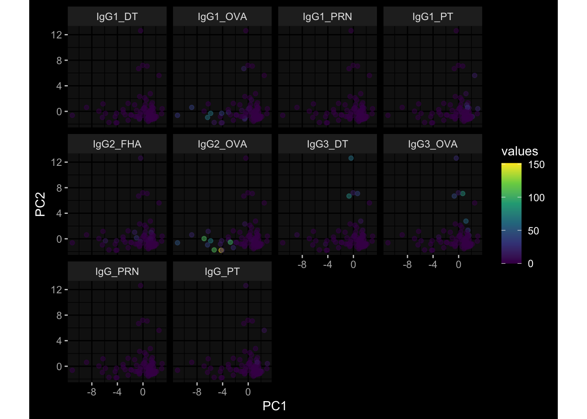
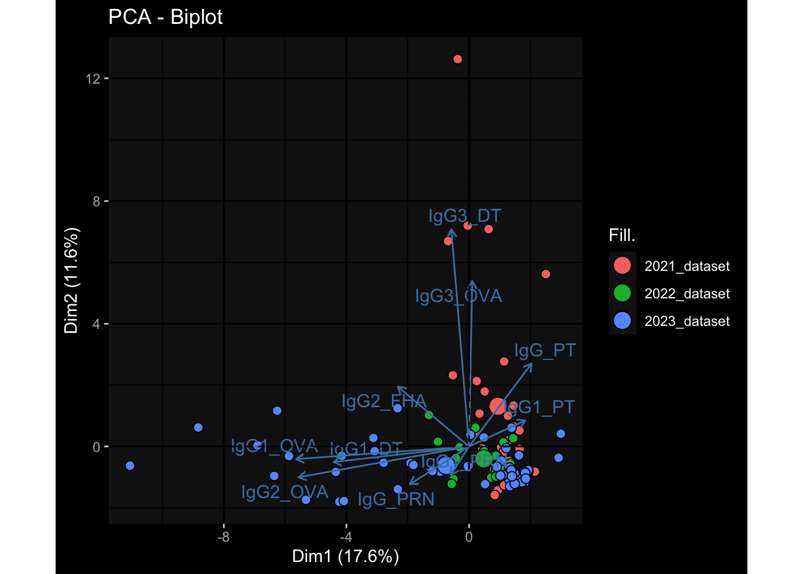
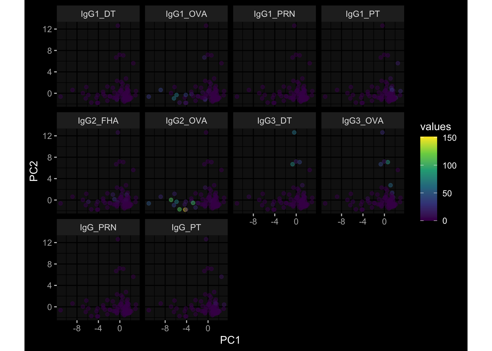
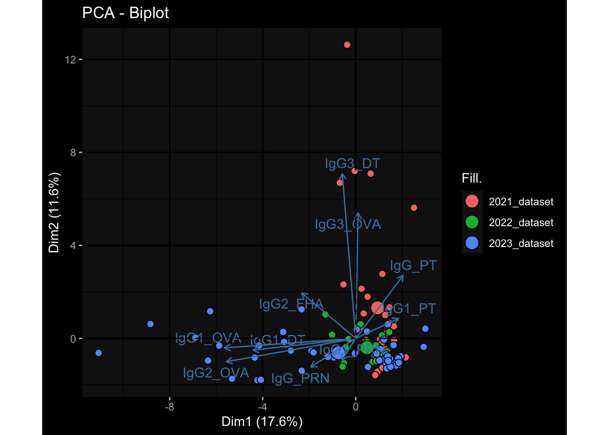
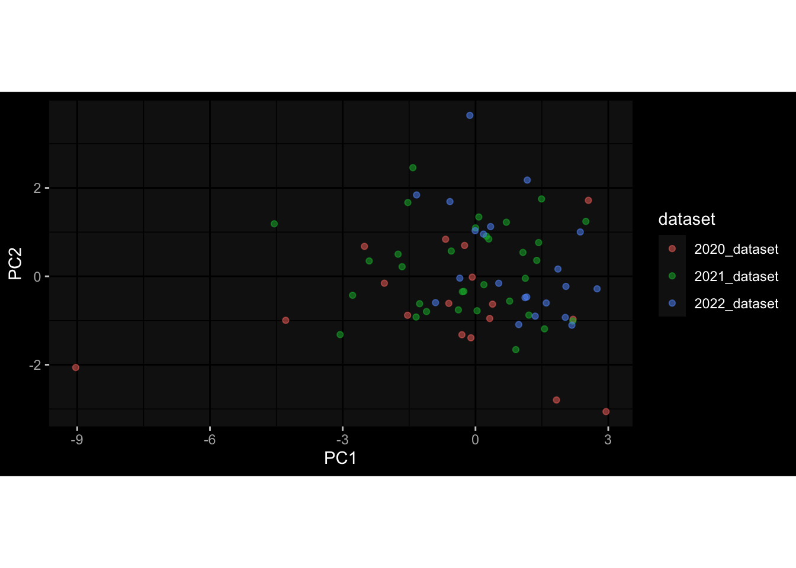
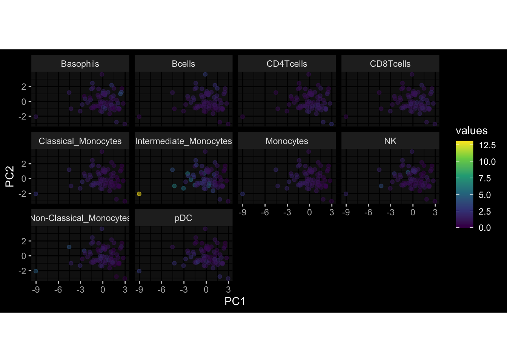
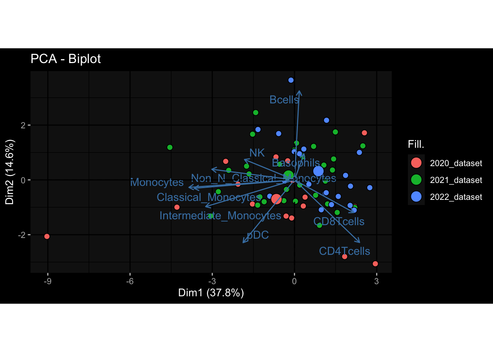
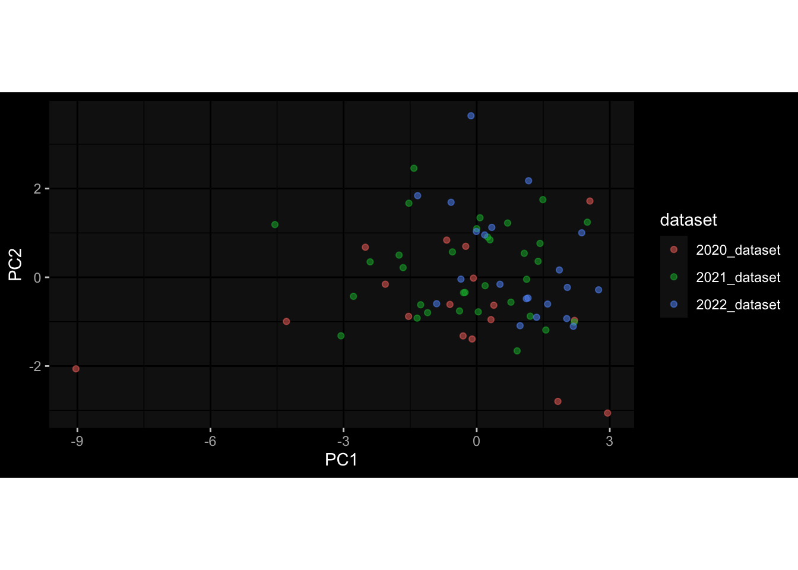
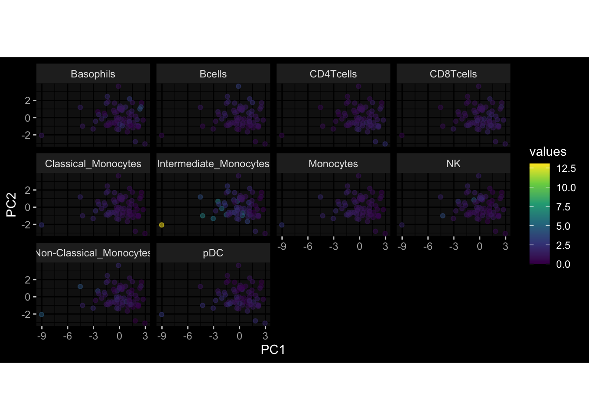
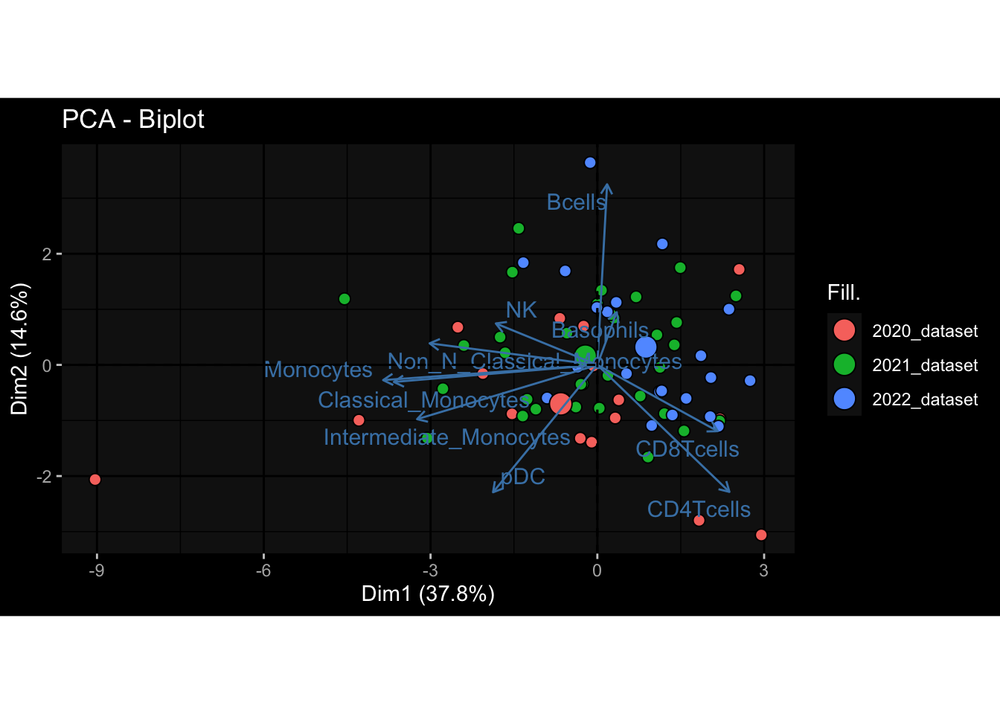

--- title: "Batch Effects After Integrations" author: "Philipp Sven Lars Schäfer" date: "`r format(Sys.time(), '%d %B, %Y')`" editor: source engine: knitr --- # Packages ```{r} suppressPackageStartupMessages ({library (tidyverse)library (ggdark)library (vsn)library (lme4)library (DESeq2)library (factoextra)library (FactoMineR)library (magick) # formatting :: knit_hooks$ set (crop = knitr:: hook_pdfcrop) # formatting source (file.path (".." , "src" , "read_data.R" ))source (file.path (".." , "src" , "generate_targets.R" ))source (file.path (".." , "src" , "model.R" ))source (file.path (".." , "src" , "batch_effects.R" ))source (file.path (".." , "src" , "normalize_integrate.R" ))``` # Data ```{r} = file.path (".." , "data" )``` ```{r} <- read_celltype_meta (input_dir)<- read_gene_meta (input_dir)<- read_protein_meta (input_dir)<- read_harmonized_meta_data (input_dir)<- FALSE if (RECOMPUTE) {<- read_raw_experimental_data (input_dir)<- filter_experimental_data (meta_data= meta_data, experimental_data= experimental_data, gene_meta= gene_meta)<- normalize_experimental_data (meta_data= meta_data, experimental_data= experimental_data,gene_meta= gene_meta)<- integrate_experimental_data (meta_data= meta_data, experimental_data= experimental_data)write_rds (experimental_data, file = file.path (input_dir, "prc_datasets" , "integrated_experimental_data.RDS" ))else {<- read_rds (file = file.path (input_dir, "prc_datasets" , "integrated_experimental_data.RDS" ))<- experimental_data[- which (names (experimental_data) == "pbmc_gene_expression_counts" )]<- get_specimen_per_day (meta_data= meta_data)``` # Conclusions ## PBMC Fractions ## PBMC Gene Expression - This is still troubling me. The 2022 dataset is very very different, even after running ComBat-seq. Maybe I am doing something wrong here!## Plasma Antibody Levels ## Plasma Cytokine Concentration by Legendplex ## Plasma Cytokine Concentration by Olink - No further processing needed I guess.## T Cell Activation - No further processing needed I guess.## T Cell Polarization - Specimen are only available for baseline, most of the variance is explained by interaction terms `age_at_boost:dataset` and `infancy_vac:dataset` . TODO: Think about what to make of this.# Results ```{r} #| results: asis ##| crop: true # interfers with dynamic toc generation for (day in names (specimen_per_day)) {# day <- names(specimen_per_day)[1] cat (" \n\n " )cat (paste0 ("## " , day))cat (" \n\n " )<- specimen_per_day[[day]]for (assay in names (experimental_data)) {# assay <- names(experimental_data)[4] cat (" \n\n " )cat (paste0 ("### " , assay))cat (" \n\n " )<- experimental_data_settings[[assay]]$ feature_col<- experimental_data_settings[[assay]]$ value_col<- experimental_data[[assay]]#str(assay_df_long) <- specimen_df %>% :: filter (specimen_id %in% unique (assay_df_long$ specimen_id))if (nrow (specimen_df_filtered) <= 3 ) {cat (paste0 ("Fewer than 3 specimen for this combination of assay and day available" ))else {<- assay_df_long %>% :: select (dplyr:: all_of (c ("specimen_id" , feature_col, value_col))) %>% :: pivot_wider (names_from= dplyr:: all_of (feature_col), values_from= dplyr:: all_of (value_col)) %>% :: column_to_rownames (var= "specimen_id" ) %>% as.matrix () %>% as.character (specimen_df_filtered$ specimen_id), ]<- "knn" stopifnot (impute_mode %in% c ("zero" , "median_feature" , "knn" ))if (any (is.na (assay_mtx_wide))) {cat (paste0 ("Non-zero fraction of NAs: " , round (mean (is.na (assay_mtx_wide)), 4 )))# data: matrix with genes in the rows, samples in the columns if (impute_mode == "zero" ) {is.na (assay_mtx_wide)] <- 0 else if (impute_mode == "knn" ) {<- t (impute:: impute.knn (data= t (assay_mtx_wide))$ data)else if (impute_mode == "median_feature" ) {<- matrixStats:: colMedians (assay_mtx_wide, na.rm= TRUE )for (colname in colnames (assay_mtx_wide)) {<- assay_mtx_wide[, colname]is.na (col_vec)] <- col_medians[colname]<- col_vecstopifnot (! any (is.na (assay_mtx_wide)))# dist_mtx <- as.matrix(dist(assay_mtx_wide)) # dist_mtx_median <- median(dist_mtx[lower.tri(dist_mtx)]) # dist_mtx_binary <- dist_mtx > (3 * dist_mtx_median) # outliers <- # which(rowSums(dist_mtx_binary) > (10*median(rowSums(dist_mtx_binary)))) # no_outliers <- rownames(dist_mtx)[!rownames(dist_mtx) %in% names(outliers)] # assay_mtx_wide <- assay_mtx_wide[no_outliers, ] #str(assay_mtx_wide) suppressMessages ({suppressWarnings ({<- pvca_analysis (assay_mtx_wide= assay_mtx_wide,meta_data= meta_data)$ p1print (p1)<- generate_pca_plots (assay_mtx_wide= assay_mtx_wide,meta_data= meta_data)print (plist$ p1)print (plist$ p2)print (plist$ p3)cat (paste0 (" \n\n " ))``` # Appendix ```{r} sessionInfo ()```  
 
